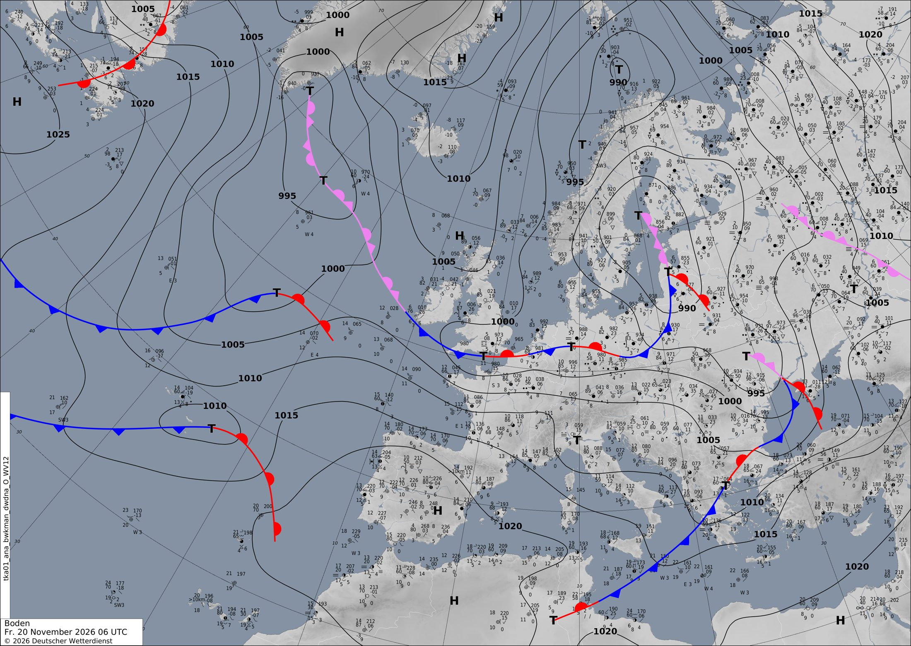

Un frente atlántico muy húmedo cruza la Península y Francia el fin de semana
Una vaguada en altura hace crecer una borrasca al oeste de Irlanda. Su frente frío trae el sábado aire templado y mucha lluvia al oeste peninsular, y el domingo a Francia. Detrás, el lunes, sube la presión y llega el aire frío.
Europa y el Atlántico
Esta madrugada el mapa de Europa está partido en dos. Al norte, un gran remolino de aire frío gira sobre Escandinavia y el Báltico. En el mapa de 500 hPa es un pozo de unos 512 decámetros. Al sur, el anticiclón subtropical, con 1025 hPa al sur del mar de Alborán, mantiene el aire templado sobre el norte de África. Entre los dos corre una corriente en chorro muy potente: casi 270 km/h al noreste de Azores, apuntando a la Península y a Francia.
Las borrascas viajan pegadas a ese chorro. Hoy hay una de 991 hPa al sureste de Irlanda y otra más pequeña, de 994 hPa, cerca del canal de la Mancha. La carta del DWD de las 06 UTC le dibuja un frente que cruza el norte de Francia y Alemania. En el satélite se ve además una larga banda de nubes blancas que va del Atlántico al golfo de Vizcaya: es la humedad que arrastra el chorro.
La protagonista llega mañana. Una vaguada, que es un valle de aire frío en altura, se hunde al oeste de Irlanda. Delante de ella el aire sube y se forma una nueva borrasca, con 987 hPa mañana a las 00 UTC. Su viento del suroeste empuja aire templado y muy húmedo hacia la Península. Mira aquí la borrasca y su cola de lluvia.
- Domingo 22, 00 UTC: la borrasca está al suroeste de Irlanda (990 hPa) y su frente frío forma una cinta de lluvia de miles de kilómetros, desde el sur de Islandia hasta Portugal. La vaguada en altura ya está sobre Galicia. Fíjate en el mapa de altura.
- Lunes 23: el panorama cambia. Detrás del frente sube la presión y un anticiclón de 1029 hPa se instala sobre Castilla y León. La energía se va al Mediterráneo central: se forma una borrasca de 997 hPa sobre los Balcanes, con lluvias fuertes (hasta 77 mm en 12 horas al este del Adriático) y aire inestable en el sur de los Balcanes.
A +72 h los detalles pueden cambiar en las próximas pasadas. Pero el patrón general es claro: un frente atlántico el fin de semana y, después, aire más frío y seco.
En península ibérica y Baleares
Hoy, viernes, el chorro pasa casi por encima del norte peninsular y ya deja lluvia en el noroeste: hasta 17,6 mm en las primeras 12 horas y hasta 31 mm entre las 12 y las 00 UTC. En el resto manda el anticiclón del sur. Hay ambiente suave, con zonas que pasan de 23 °C a mediodía, aunque a medianoche algún punto de montaña estaba a −2,4 °C.
El sábado es el día fuerte. El viento del suroeste trae por delante del frente una masa de aire muy templada: a 850 hPa, unos 1500 m de altura, se llega a 19,7 °C, un valor altísimo para finales de noviembre. A mediodía algún punto alcanza 26,4 °C, seguramente en zonas resguardadas del este o del sur. Ese aire húmedo choca con las sierras del oeste y se ve obligado a subir. Así se suma la lluvia orográfica a la frontal (de dónde sale la lluvia). Entre las 00 y las 12 UTC del sábado el modelo da hasta 72 mm en 12 horas, con viento de hasta 76 km/h. Mira aquí dónde se concentra.
El domingo el frente cruza la Península de oeste a este. Por la noche descarga con fuerza sobre Portugal, con hasta 41 mm, y durante el día deja aún hasta 18,8 mm, con viento de hasta 69 km/h. El aire es algo inestable (CAPE de hasta 560 J/kg), así que puede caer algún chubasco más intenso, pero nada excepcional.
El lunes se instala el anticiclón sobre Castilla y León. El cielo despeja y entra aire más frío, con 850 hPa cerca de 0 °C en el norte y −2,2 °C a medianoche en algún punto del interior. Los restos del frente aún dejan hasta 16,6 mm en algún lugar, probablemente en el este, por donde se retira.
En Francia
Hoy la pequeña borrasca del canal de la Mancha y su frente cruzan el norte del país, con hasta 29,9 mm en las primeras 12 horas y viento de hasta 61 km/h. Francia vive grandes contrastes: a medianoche algún punto de los Alpes estaba a −11,4 °C mientras el sur rondaba los 17 °C.
El sábado el chorro pasa justo encima de Provenza, a unos 280 km/h. En el noreste el aire está frío (hasta −4,5 °C a 850 hPa) y aún cae algo de lluvia: hasta 28,6 mm en la noche del viernes y hasta 12,6 mm el sábado de día.
El domingo llega desde el oeste el frente que el sábado empapa la Península. Es el día más lluvioso: hasta 24,7 mm en la noche del sábado y hasta 42,2 mm durante el domingo, con viento de hasta 69 km/h.
El lunes se juntan un anticiclón sobre España y una borrasca sobre los Balcanes. Entre ambos se aprietan las isobaras y el aire baja del norte por el valle del Ródano y el Languedoc. Es la configuración típica del mistral y la tramontana (vientos regionales). El modelo da hasta 74 km/h. Mira aquí las flechas de viento.
París y alrededores. Viernes 20: 9 °C a medianoche y unos 12 °C a mediodía. Cae lluvia débil (2,2 mm por la mañana y 1,2 mm por la tarde-noche) y el viento llega a 36 km/h a mediodía al pasar la borrasca cerca. Sábado 21: entre 6 y 7,5 °C a medianoche y unos 10 °C a mediodía. Será un día seco y con viento flojo (8–10 km/h). Domingo 22: día gris y fresco, con unos 6–7 °C tanto a medianoche como a mediodía. Llueve todo el día: 6,8 mm por la mañana y 12,5 mm entre las 12 y las 24 UTC, con viento flojo (12–15 km/h). Lunes 23: a medianoche entre 4,5 y 5,5 °C, con una pequeña borrasca encima.
Lección del día: Vaguada y dorsal
Hoy aprenderás a usar una vaguada para saber dónde lloverá.
- Abre el mapa de 500 hPa de mañana a las 00 UTC: mira aquí. Busca al oeste de Irlanda las líneas que se doblan hacia el sur en forma de U. Eso es una vaguada: un valle de aire frío en altura.
- Añade la lluvia en ese mismo paso. Verás que la banda de lluvia queda delante de la vaguada, en su lado este. Ahí el aire asciende, se enfría y forma nubes.
- Avanza al domingo 22 a las 00 UTC: mira aquí. El fondo de la U ya está sobre Galicia y la lluvia fuerte cae justo delante, sobre Portugal.
- Pasa al lunes 23 (+72 h) con la capa de presión. Detrás de la vaguada el aire desciende, la presión sube y aparece el anticiclón sobre Castilla.
Regla práctica: delante de la vaguada, nubes y lluvia; detrás, cielo despejado y aire más frío.
Ponte a prueba
3 preguntas sobre el tiempo de hoy. Puedes mirar el mapa antes de contestar.
¿Por qué el sábado llueve tanto en el oeste de la Península?
Delante del frente, el viento del suroeste lleva aire muy húmedo contra el relieve. Al subir se enfría y descarga (lluvia orográfica y frontal). Mira aquí.
¿Qué tiempo cabe esperar en el interior peninsular el lunes 23, cuando la vaguada ya ha pasado?
Detrás de la vaguada el aire desciende y se forma un anticiclón de 1029 hPa sobre Castilla y León. Mira aquí.
Si en el mapa de 500 hPa del domingo 22 a las 00 UTC la vaguada tiene su fondo sobre Galicia, ¿dónde esperarías la lluvia más fuerte?
La carta oficial
Análisis de superficie del servicio meteorológico alemán (DWD) válido el 20/11/2026 a las 06 UTC, dibujado por meteorólogos a partir de observaciones. Aquí sí hay frentes: azul con triángulos, frío; rojo con semicírculos, cálido; morado, ocluido. Las borrascas son T y los anticiclones H. Cómo leer esta carta.
